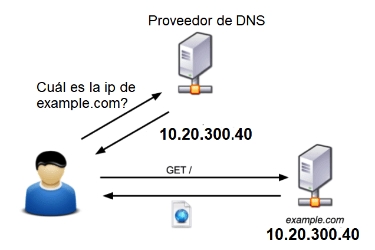
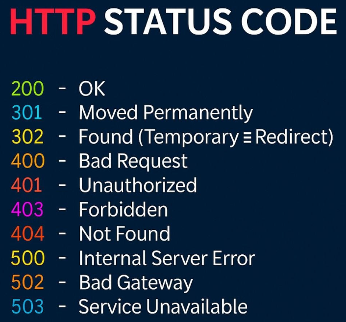

Footprinting
Totes les pràctiques d'este curs es realitzaran baix:
- ⚖️ Un marc legal i ètic
- 🔒 Entorn aïllat
- 🧪 Controlat
- 📜 Amb permís
- 🎓 Fins educatius / professionals
Footprinting
Footprinting: Recollida d'informació pública o “information gathering” (menys important en un procés d'auditoria interna).
La fase de footprinting és la primera etapa en un procés d’auditoria de seguretat informàtica o hacking, i consisteix en recollir informació sobre una organització, els seus sistemes, la seua infraestructura i les persones relacionades amb aquesta.
Quan s'utilitzen fonts públiques (OSINT), la recopilació d'informació pot ser legítima, però això no significa que qualsevol tractament, ús o difusió de les dades obtingudes siga legal. Cal respectar la normativa de protecció de dades, la intimitat, la confidencialitat i els drets de tercers.
El footprinting pot incloure tècniques passives, com la consulta de fonts obertes, i tècniques actives o d'interacció, com l'enumeració de serveis, les simulacions de phishing o les proves d'enginyeria social. Aquestes últimes requereixen una avaluació específica dels riscos i, quan corresponga, una autorització expressa.
En una auditoria de seguretat professional, l'abast, les tècniques permeses, els sistemes afectats i les condicions d'execució han d'estar definits prèviament. L'objectiu és identificar informació exposada i possibles riscos sense vulnerar drets ni accedir a recursos sense autorització.
- Tipus de Footprinting
- Footprinting utilitzant fonts obertes (OSINT)
- Footprinting utilitzant "DNS Reconnaissance"
- Footprinting utilitzant "WEB Reconnaissance"
- Footprinting utilitzant "Leaks Reconnaissance"
- Footprinting utilitzant "Identity Reconnaissance"
- Footprinting utilitzant "Cerca inversa"
- Footprinting utilitzant "Anàlisi d'arxius"
- Footprinting utilitzant "Phishing"
- Footprinting utilitzant Enginyeria social
- Footprinting utilitzant Vishing, SMiShing
- Footprinting utilitzant Dumpster diving
- Footprinting utilitzant Shoulder surfing
- Footprinting utilitzant Tailgating
- Footprinting utilitzant Altres ferramentes (noves)
Alguns d'estos tipus no son legals en un entorn obert, per això...
!! Sempre en consentiment de l'organisme o empresa a ser testada !!
Metadades
Les metadades són dades que descriuen altres dades. En el cas de documents com PDF, Word, Excel, imatges, etc., les metadades poden contenir informació oculta (però fàcil d’extreure) que pot ser molt valuosa per un analista / auditor o atacant en la fase de footprinting
Les metadades de documents tenen un paper molt important dins del footprinting, especialment en la seva variant passiva, ja que poden revelar molta informació sensible sense accedir directament a cap sistema
Per què això és útil en el footprinting?
- Identificació de persones clau dins l’organització (autor del document).
- Coneixement de la infraestructura interna, com ara noms de màquines o rutes.
- Revelació de software utilitzat, útil per a detectar vulnerabilitats.
- Anàlisi de patrons temporals, per saber quan es generen fitxers o si l’empresa segueix hàbits regulars.
🛠️ Eines per extreure metadades
- exiftool
- FOCA
- Online tools com https://www.metadata2go.com/
- Visualització directa a Microsoft Word / Adobe Reader
Les metadades són una font valuosa i sovint infravalorada en el footprinting passiu. A partir de documents aparentment inofensius, es pot obtenir informació crítica sobre persones, sistemes i estructures internes d’una organització, tot sense alçar sospites
Footprinting amb google
Google (Hacking): El cercador Google es pot utilitzar per fer cerques avançades les quals poden proporcionar informació sensible i interessant d'una organització que no estiga ben configurada o fortificada.
A més de revelar els errors en les aplicacions web, Google Hacking permet trobar les dades sensibles, útils per a l'etapa de reconeixement d'un atac.
Els cercadors, com Google o Bing, tenen una sèrie de paràmetres que permeten fer cerques avançades. Aquests paràmetres són denominats com Dorks.
Dorks
Els Dorks són combinacions d'operadors especials que tenen els cercadors per “afinar” les cerques que fem, i si bé són molt útils per actuar de filtre de la informació que ens tornen, també són una eina molt útil per trobar informació sensible que la gent deixa en alguns servidors, o fins i tot dispositius o pàgines web vulnerables.
site:example.com filetype:pdf
site:example.com (filetype:xlsx OR filetype:docx OR filetype:csv)
Aquesta situació ocorre degut a que els robots de Google (aranyes) que indexen contingut (és el que fa que un lloc siga posicionat d’acord a les paraules clau que es troben) són capaços d’interpretar tot tipus de fitxers, no només pàgines web. Per tant, si una persona, que no té constància ni coneixements d’açò, deixa un fitxer amb informació sensible en un directori web que permet ser llistat, serà accedit i indexat pels robots de Google.
Aleshores, què podem trobar realitzant aquests búsquedes?
- Fitxers que contenen noms d'usuari.
- Directoris sensibles.
- Detecció de versió de servidor web.
- Arxius i servidors vulnerables.
- Arxius que contenen contrasenyes.
- Dades de reds i vulnerabilitats.
- Formularis d’accés (login).
Hi han més de 45 Dorks que ens permeten realitzar búsquedes indexades mitjançant el buscador Google.
A partir d’ací, anem a veure una sèrie de Google Dorks, que ens seran de gran utilitat a l’hora de realitzar búsquedes d’informació sensible.
- site: permet llistar tota la informació d'un domini concret.
- filetype o ext: permet cercar fitxers d'un format determinat, per exemple pdfs, rdp (d'escriptori remot), imatges png, jpg, etc. per obtenir informació EXIF i un llarg etcètera.
- intitle: permet buscar pàgines amb certes paraules en el camp title.
- inurl: permet buscar pàgines amb paraules concretes a la URL.
- Interessant buscar frases tipus "index of" per trobar llistats d'arxius de FTPs, "mysql server has gone away" per buscar llocs web vulnerables a injeccions SQL en Mysql, etc.
Footprinting amb bing
Bing (Hacking): De la mateixa manera que amb Google hacking, es pot utilitzar el cercador de Microsoft per treure informació sensible i interessant.
Bing comparteix la majoria de dorks de google. Alguns són:
• site: — • filetype: — • intitle: — • inurl: — • intext: — • ip: —
Footprinting amb Shodan
Shodan: És un cercador d'actius o dispositius online. És molt interessant per identificar càmeres web, impressores, scada, i altres recursos exposats a Internet.
Footprinting amb Anubis
Anubis: Eina que conté un gran set d’utilitats per recol·lectar informació. Es poden automatitzar diverses recerques amb aquesta eina. https://github.com/jonluca/Anubis
Footprinting amb Maltego
Maltego és una eina molt potent per fer footprinting i OSINT, ja que permet visualitzar les connexions entre diferents elements com dominis, persones, adreces IP, servidors, xarxes socials, etc.
FOCA Final Version
Eina privativa similar a Anubis que compta, a més, amb funcionalitats avançades d'anàlisi de metadades.
Serveis online: Diferents serveis online que podran ser de gran utilitat en un procés d'auditoria, com, per exemple, Cuwhois, Robtex, Netcraft, Chatox, etc.
⚖️ Aspectes legals i ètics
- Estes eines treballen amb fonts obertes, per tant, la major part de les consultes són legals.
- Tot i això, l’ús malintencionat (per fer doxing, espionatge, etc.) pot ser il·legal.
- En contextos professionals, cal autorització prèvia si s’analitzen entitats reals.
DNS Reconnaissance
Resolució DNS

Quan escrivim una URL en la barra del navegador, com ara https://www.exemple.com/index.html, el navegador necessita conéixer l'adreça IP del servidor per a poder establir una connexió. El procés es diu resolució DNS.
1. El navegador interpreta la URL → En https://www.exemple.com/index.html:
- https és el protocol.
- www.exemple.com és el nom de domini que cal resoldre.
- /index.html és el recurs que es vol obtindre.
2. Comprova si ja té la IP. Pot aprofitar informació guardada en memòria cau. El sistema operatiu també pot tindre una entrada local al fitxer hosts.
3. Pregunta a un DNS recursiu. Per exemple, el router, el DNS de l'operador o 1.1.1.1
4. Si este DNS recursiu no té la resposta, busca la delegació: Servidors arrel → servidors de .com → DNS autoritatiu .
5. Obté la IP: Exemple fictici: 203.0.113.10
6. Es connecta al servidor web: Estableix la connexió i sol·licita la pàgina "/index.html" per HTTPS
Enumeració DNS
L'enumeració DNS (Domain Name System), o DNS Reconnaissance, és un procés d'obtenció d'informació sobre un domini mitjançant la consulta del sistema de noms de domini. Aquesta informació pot ser molt útil tant per a administradors de sistemes (per identificar configuracions i problemes) com per a atacants (durant la fase de reconeixement d’un test d’intrusió o ciberatac).
Una enumeració DNS activa no és necessàriament il·legal, però pot arribar a ser-ho segons les tècniques emprades i les circumstàncies.(dig, nslookup, dnsenum, dnsreccon,..)
Consultar registres DNS públics amb dig, generalment és una activitat lícita.
Fer moltes consultes (consultes massives) per descobrir subdominis no és automàticament il·legal, però cal valorar-ne les circumstàncies.
(Fer consultes massives que provoquen una degradació del servei) o (Utilitzar els resultats per accedir a sistemes protegits sense autorització)
L'enumeració DNS consisteix a recopilar dades públiques que el sistema DNS proporciona sobre un domini. Aquestes dades poden incloure:
- Adreces IP associades a noms de domini (A, AAAA)
- Servidors de noms (NS records)
- Servidors de correu electrònic (MX records)
- Aliases (CNAME records)
- Registres de text (TXT), com ara SPF o DKIM
- Registres de localització de serveis (SRV)
- Zones DNS senceres (si es pot fer una transferència de zona)
- Descobriment de subdominis (blog.exemple.com, admin.exemple.com)
🛠️ Tècniques comunes d'enumeració DNS
- Consulta directa (lookup) Buscar un registre DNS concret, com per exemple: nslookup example.com dig example.com
- Enumeració inversa (Reverse DNS) Determinar el nom de domini associat a una IP: dig -x 192.0.2.1
- Transferència de zona (Zone Transfer) Si el servidor DNS està mal configurat, es pot obtenir tota la zona:
- Enumeració de subdominis per Bruteforce o diccionari Provar múltiples noms per trobar subdominis com admin.example.com, mail.example.com, etc.
- Recerca passiva Ús de serveis públics com VirusTotal o censys.io
dig @ns1.example.com example.com AXFR
Per a què serveix? (en Red Team )
Descobrir hosts actius, serveis, o possibles punts d'entrada.
Ferramentes de Red Team específiques per fer enumeració DNS
- dig (Activa) consulta registres DNS concrets
- nslookup (Activa) consulta registres DNS concrets
- dnsenum (Activa) https://www.kali.org/tools/dnsenum/
- fierce (Activa) https://www.kali.org/tools/fierce/
- nmap (Activa) . **Alguns scripts específics per a DNS
- massdns (Activa) https://www.kali.org/tools/dnsrecon/
- dnsrecon (Mixta) https://www.kali.org/tools/dnsrecon/
- amass (Mixta) https://www.kali.org/tools/amass/
- subfinder (passiva) * Recopila subdominis a partir de cercadors i fonts públiques. https://www.kali.org/tools/subfinder/
- sublist3r (passiva) * un poc desactualitzada
- theHarvester (passiva) * Recull d’informació sobre dominis (DNS, correus, subdominis, etc.).
🛠️ Encara que una ferramenta siga Activa, les consultes són sobre fonts obertes (servidors DNS)
dig
dig (Domain Information Groper) és una eina de línia d'ordres que permet consultar servidors DNS per obtindre informació sobre dominis, subdominis, adreces IP i altres registres DNS.
Sintaxi bàsica
dig [@servidor_DNS] nom_domini [tipus_registre] [opcions] Exemple: dig @192.168.56.10 www.lab.test A
Network Reconnaissance o Host Discovery
El Host Discovery és el procés d’identificar els dispositius actius d’una xarxa informàtica, determinar les seues adreces IP i, quan siga possible, obtenir informació bàsica sobre aquests dispositius.
- El network reconnaissance es pot dividir en:
- Adreçament i rangs IP: xarxes, màscares, CIDR i adreça de difusió (broadcast).
- Descobriment d'hosts: identificar equips actius dins d'un rang d'IPs.
- Resolució ARP: relacionar adreces IPv4 amb adreces MAC en la xarxa local.
- Descobriment amb ICMP: entendre el funcionament de ping i les seues limitacions.
- Enumeració amb Nmap: descobrir hosts i, com a introducció, identificar ports i serveis.
- Limitacions del reconeixement: tallafocs, equips que no responen a ICMP, xarxes segmentades i falsos negatius.
Podem fer servir les següents eines per fer una enumeració de màquines en una xarxa (local) :
- ip addr
- ip route
- ip neigh
- ping
- sudo arp-scan 10.0.2.0/24
- sudo netdiscover -r 10.0.2.0/24
- sudo nmap -sn 192.168.56.0/24
- nmap -sn 192.168.56.0/24
- fping -a -g 192.168.18.0/24 2>/dev/null
- nbtscan 192.168.56.0/24 (netbios : windows)
WEB Reconnaissance (Enumeració WEB)
Enumeració web: descobrir recursos i analitzar les respostes HTTP
L'enumeració web és una fase del reconeixement en ciberseguretat en què investiguem un servidor web per descobrir quins recursos exposa: directoris, fitxers, panells d'administració, funcionalitats disponibles, API, aplicacions i altres rutes que no sempre apareixen en la pàgina principal.
L’objectiu principal és descobrir la superfície d’atac per tal d’identificar possibles punts febles abans d’un atac o d’una prova de penetració.
Una part important del procés és observar els codis d'estat HTTP, com ara 200, 301, 403 i 404, per a interpretar què respon el servidor quan intentem accedir a una ruta.

Com funciona l'enumeració web?
- Identificar el servidor web : IP, ports 80/443, servei HTTP/HTTPS
- Sol·licitar rutes conegudes i candidates : /, /admin, /login, /robots.txt, /api...
- Analitzar les respostes HTTP : Codi d'estat, mida, redireccions, capçaleres i contingut
- Verificar els resultats : Distingir recursos reals, errors, falsos positius i rutes protegides
Les eines automatitzen moltes peticions HTTP i proven noms de directoris i fitxers a partir de diccionaris. L'investigador interpreta els resultats i comprova manualment els que són interessants.
Importància dels codis d'error
URL provada Resposta Interpretació inicial / 200 OK La pàgina principal respon correctament. /login 200 OK Podria existir una pàgina d'inici de sessió. /admin 403 Forbidden L'accés està prohibit, però no demostra per si sol que existisca un panell d'administració. /backup.zip 404 Not Found El servidor indica que no troba el recurs. /old-panel 301 Moved Permanently El servidor redirigeix cap a una altra URL.
Els codis són indicis, no proves absolutes. Un servidor pot retornar 404 per ocultar un recurs, o 200 encara que la pàgina sol·licitada no existisca.
Quan una eina prova aquestes URL automàticament, l'eina analitza les respostes i intenta identificar quines rutes mereixen una comprovació manual. Aquest procediment es coneix com a directory busting, content discovery o enumeració de contingut web.
Què inclou habitualment l’enumeració web
- Enumeració de directoris i fitxers ocults (/admin/, /backup.zip).
- Llistat d’endpoints i API (/api/v1/users).
- Identificació de tecnologies (frameworks, CMS, versions del servidor).
- Detecció de formularis, paràmetres i entrades (?id=123, ?search=abc).
- Examinar certificats TLS, capçaleres HTTP, redireccions, versions identificables i possibles errors de configuració.
- Revisió de metadades en fitxers públics.
Eines habituals
- dirb, dirbuster, gobuster, feroxbuster, ffuf → Per a cercar directoris i fitxers ocults.
- whatweb, wappalyzer → Per a detectar tecnologies, el CMS o el servidor.
- Arjun, ParamSpider → Per a identificar o recopilar possibles paràmetres de les URL.
- testssl.sh, SSLyze → Per a examinar la configuració TLS, els certificats i els protocols criptogràfics admesos.
- ExifTool, FOCA → Per a extraure i analitzar metadades de documents i fitxers públics.
- ...
Fuzzing
El fuzzing és una tècnica de proves que consisteix a enviar automàticament una gran quantitat de dades, valors o peticions a una aplicació per observar les respostes i descobrir recursos, comportaments inesperats o vulnerabilitats.
En el context web, consisteix habitualment a provar diferents valors en URL, paràmetres, capçaleres HTTP, camps de formularis, etc.
Per exemple, es pot provar automàticament diferents directoris: https://empresa.test/admin https://empresa.test/login https://empresa.test/backup https://empresa.test/config https://empresa.test/uploads On admin, login, backup, config, uploads, .. estaran en un fitxer de diccionari
Si algun d'aquests recursos existeix, el servidor pot respondre amb un codi HTTP 200, 301, 403, etc.
Tipus de fuzzing
| Tipus | Què busca? | Exemple |
|---|---|---|
| Directory fuzzing | Directoris ocults | /admin, /private |
| File fuzzing | Fitxers existents | backup.zip, config.php |
| Subdomain fuzzing | Subdominis | dev.empresa.test |
| Parameter fuzzing | Paràmetres HTTP | ?id=1, ?debug=true |
| Input fuzzing | Comportaments inesperats | Valors incorrectes en formularis |
| API fuzzing | Endpoints i respostes d'API | /api/v1/users |
El directory fuzzing i el file fuzzing també es coneixen com a content discovery o content enumeration . En canvi, el fuzzing clàssic sol posar més èmfasi a provar entrades inesperades, malformades o aleatòries per detectar errors i vulnerabilitats.
*** Importància del diccionaris ***
La qualitat del diccionari és un factor molt important en el fuzzing web, especialment quan fem directory fuzzing i file fuzzing. De fet, un bon diccionari pot marcar la diferència entre descobrir recursos interessants o no trobar pràcticament res.
Quan utilitzem ferramentes com ffuf, Gobuster o dirsearch, aquestes necessiten una llista de paraules que provaran automàticament contra el servidor web.
Hi ha projectes que recopilen diccionaris especialitzats en seguretat web:
- SecLists : Gran col·lecció de diccionaris per a directoris, fitxers, usuaris, contrasenyes i altres proves.
- FuzzDB : Inclou patrons, noms de recursos i càrregues útils per provar aplicacions web.
- Assetnote Wordlists : Diccionaris orientats al descobriment de contingut web i actius.
El fuzzing no és simplement provar moltes paraules. És provar les paraules adequades.
-- Instalar en kali "SecLists" sudo apt update sudo apt install seclists -y -- Consultar en ls /usr/share/seclists/Discovery/Web-Content/
-- Instalar en kali "FuzzDB" git --version sudo apt install git -y cd ~ git clone --depth 1 https://github.com/fuzzdb-project/fuzzdb.git -- i la ubicació serà /home/kali/fuzzdb/
Instalar en kali "Assetnote Wordlists" mkdir -p ~/wordlists/assetnote cd ~/wordlists/assetnote wget -r --no-parent -R "index.html*" https://wordlists-cdn.assetnote.io/data/ -nH -e robots=off
Reconnaissance , Reconeixement o Enumeració
Forma part de les fases inicials d'una auditoria de seguretat o d'un pentesting. Pot combinar tècniques passives amb tècniques actives que interactuen directament amb el servidor.
Reconeixement passiu
Sense contacte directe necessari amb el servidor objectiu
Utilitza informació ja disponible en fonts públiques: cercadors, registres, arxius web, bases de dades de certificats i documents publicats.
Exemples: Google, Wayback Machine, Shodan i Censys.
Reconeixement actiu
Genera peticions als sistemes analitzats
Interactua directament amb el lloc web o els seus serveis per a obtindre informació addicional.
Exemples: curl, WhatWeb i eines de descobriment de directoris com Gobuster.
Descarrega d'un lloc web
És molt útil per descargar i inspeccionar contingut web de manera automatitzada, cosa que pot ajudar a descobrir recursos ocults o informació rellevant.
Encara que wget no és específicament una eina d’enumeració com gobuster o dirb, sí que pot complementar aquesta fase.
wget
Descàrrega de pàgines o llocs sencers
Pots baixar tot un lloc web per a analitzar-lo localment.
Exemple
wget -r -np -k http://exemple.com Açò descarrega tot el contingut navegable de exemple.com sense eixir del domini
(-np) i converteix els enllaços per a usar-los localment (-k).
Descàrrega de fitxers específics
Si durant l’enumeració detectes un fitxer interessant (.zip, .pdf, .xml), wget permet baixar-lo ràpidament per analitzar-lo:
wget http://exemple.com/backup.zipExploració de robots.txt
El fitxer "robots.txt" és un fitxer de text que s'utilitza per a indicar als robots i rastrejadors web (spiders o crawlers) quines parts d'un lloc web poden rastrejar i quines parts es demana que no rastregen. Normalment es troba en l'arrel del domini. Per exemple:
https://www.exemple.com/robots.txt
-- Exemple de contingut d'un fitxer User-agent: * Disallow: /administracio/ Disallow: /privat/ Allow: /privat/public/ Sitemap: https://www.exemple.com/sitemap.xml
En una investigació OSINT, consultar robots.txt pot proporcionar pistes sobre l'estructura d'un lloc web. Per exemple, pot revelar noms de directoris, rutes d'administració o zones que el responsable del lloc no vol que els cercadors rastregen.
wget pot recuperar el fitxer robots.txt, que sovint conté directoris que l’administrador no vol indexar però que poden ser interessants:
wget http://exemple.com/robots.txtAutomatització amb llistes de rutes
Amb un fitxer de rutes, pots fer peticions massives:
wget -i llistat_urls.txtTambé es pot baixar amb curl
curl https://www.exemple.com/robots.txtConsultar les capçaleres HTTP
curl -I https://exemple.com/
Permet observar dades de la resposta HTTP, com ara el codi d'estat i algunes capçaleres. No sempre revela quin servidor o quines tecnologies s'utilitzen.
robots.txt Dona instruccions als rastrejadors. És públic i consultable. No impedeix l'accés directe a una URL.
No s'ha d'utilitzar per a protegir secrets.
Versions anteriors d'un lloc web
Es pot accedir a versions antigues d’un lloc web mitjançant Internet Archive - Wayback Machine, que guarda captures periòdiques de pàgines web.
INTERNET ARCHIVEPot ser útil per:
- Trobar contingut eliminat però encara accessible
- Analitzar codi font antic
- Reconstruir l’estructura del lloc
- Detectar versions antigues de programari
- Obtenir pistes per a enginyeria social
Testimoni online d'un lloc web
Ens referim a alguna forma d’evidència digital que permet demostrar l’estat o el contingut d’una pàgina web en un moment concret. És molt útil per a temes legals, auditoria o per garantir la integritat d’informació en hacking ètic
Què és un testimoni online
- Captura de pantalla amb marca de temps: una imatge que mostra la pàgina tal com era en un moment concret.
- Captura completa del lloc: una còpia local amb tots els fitxers per a reproduir l’estat del lloc.
- Hashing del contingut: generar un hash (SHA256, MD5) dels fitxers o pàgines per a verificar que no han canviat després.
- Arxius de logs o registre d’activitats: que mostren quan i com s’ha accedit o modificat el contingut.
- Captures des de serveis d’arxiu web: com Internet Archive, que emmagatzema versions anteriors amb marca temporal.
- Signatures digitals: mitjançant certificats per garantir autenticitat.
https://www.savetheproof.com/
Enumeració d'entitats
Organizational Reconnaissance (Reconeixement organitzatiu)
El reconeixement organitzatiu és el procés de recopilar i analitzar informació pública sobre una empresa o organització per comprendre'n l'estructura, l'activitat, la presència digital i la possible superfície d'exposició davant de riscos de seguretat.
Aquesta informació pot incloure les seus i ubicacions, les persones responsables, els departaments, els empleats, els proveïdors tecnològics, els dominis corporatius, les xarxes socials i les tecnologies utilitzades. Les fonts poden ser llocs web corporatius, perfils professionals, ofertes de treball, registres públics, notes de premsa i altres recursos accessibles públicament.
Cada dada pot aportar context per identificar riscos, comprendre l'entorn de l'organització i orientar les comprovacions posteriors.
Per exemple, El nom de l'empresa, de la seu o d'un departament pot formar part de les contrasenyes que utilitzen alguns empleats.
Suposem que l'empresa fictícia es diu TecnoAlzira i té una seu a Algemesí. Informació pública Possible relació amb les contrasenyes Nom de l'empresa TecnoAlzira2026! Nom de la seu Algemesi2026! Nom d'un departament Informatica2026! Marca o producte utilitzat Una contrasenya basada en el nom d'una tecnologia coneguda Any o esdeveniment corporatiu Una combinació amb un any significatiu per a l'organització
Email Reconnaissance
L’anàlisi d’informació personal i correus electrònics en hacking ètic és una pràctica habitual dins de les auditories de seguretat i proves de penetració (pentesting), sempre amb autorització prèvia i dins d’un marc legal. L’objectiu és detectar vulnerabilitats, exposicions de dades i punts febles en la gestió de la informació per tal de protegir una organització o un individu
Eines
- Hunter.io ( de pagament ) Permet buscar adreces professionals associades a un domini i consultar les fonts públiques en què s'han trobat. També disposa de funcions de verificació i ofereix un pla gratuït amb limitacions.
- Infoga ( linia de comandes, de github) Projecte de línia de comandes orientat a recopilar informació associada a adreces electròniques mitjançant fonts i serveis disponibles.
I tota esta informació, combinada en "Have I Been Pwned" ..
... permetrà trobar forats de seguretat
Xarxes socials (Reconnaissance)
Eines
- Sherlock
- Osintgram
- altres...
Numero de telèfon (Reconnaissance)
Eines
- Phoneinfoga
Cerca inversa
La cerca inversa d’imatges és una tècnica que permet trobar informació sobre una imatge a partir de la pròpia imatge, en lloc de fer-ho amb paraules clau.
Funciona així:- Puges una imatge (o poses l’enllaç d’una imatge) a un cercador especialitzat, com Google Imatges, TinEye, Yandex o Bing Visual Search.
- L’algoritme analitza el contingut visual de la imatge (colors, formes, patrons, objectes) i també pot extreure metadades (com la data de creació o el model de càmera, si no han estat esborrades).
- Et mostra resultats relacionats, que poden ser:
- Altres llocs web on apareix la mateixa imatge.
- Versions modificades o retallades.
- Imatges similars visualment.
- Informació contextual (per exemple, l’origen o l’autor).
- Verificar si una imatge és autèntica o té un origen diferent del que et diuen.
- Trobar la versió original i de més qualitat d’una foto.
- Identificar objectes, llocs, persones famoses o obres d’art.
- Descobrir si una foto teua circula per internet sense permís.
Els principals cercados generalistes disposen d'esta eina
- Bing
- Yandex
I d'altres més especialitzats
- TinEye
Analisi d'arxius
L'anàlisi d'arxius és el procés d'examinar un fitxer per comprendre la seva estructura, contingut i funcionalitat. En l'hacking ètic, això és crucial per descobrir vulnerabilitats o informació oculta. Però per començar, el primer que necessitem és saber de quin tipus d'arxiu estem parlant.
La identificació del format d'un arxiu consisteix a determinar el tipus de dades que conté (text, imatge, àudio, executable, etc.) i com s'organitzen. Pensa-ho com un detectiu que examina l'embolcall d'un paquet abans d'obrir-lo per veure què conté
Molta gent pensa que un arxiu és el que diu la seva extensió (.txt, .jpg, .exe), però en realitat, això és només una etiqueta que el sistema operatiu utilitza per a la seva comoditat.
El veritable secret del format d'un arxiu està en les seves dades internes.
Saps quina part d'un fitxer conté informació que el defineix, i com es diu aquesta part?
- Pista: sol estar al principi de l'arxiu i serveix com una mena de "signatura" o "identificador"
Estem parlant de la capçalera o header de l'arxiu.
Magic Number
Pensa en la capçalera com la portada d'un llibre. Abans d'obrir-lo i llegir-lo, la portada ja ens diu si és una novel·la, un llibre de ciència o un manual
De la mateixa manera, la capçalera és una petita porció de dades, normalment al principi del fitxer, que conté informació clau sobre el seu format. Aquesta informació pot incloure un nombre màgic, que és una seqüència de bytes específica que identifica el tipus d'arxiu.
Per exemple, si obres un arxiu amb un editor hexadecimal, veuràs els bytes en brut. La majoria dels arxius ZIP comencen amb la seqüència de bytes 50 4B 03 04, que en ASCII seria "PK" (en honor a Phil Katz, el creador del format ZIP).
Això ens porta al cor de l'anàlisi d'arxius en l'hacking ètic: no podem confiar només en l'extensió. Un atacant podria simplement canviar l'extensió de virus.exe a imatge.jpg per enganyar-te. Però si un hacker ètic analitza la capçalera, descobrirà la veritat.
Per veure aquesta capçalera i el contingut intern d'un fitxer a nivell de bytes, necessitaríem una eina que ens permeti "llegir" el fitxer sense interpretar-lo com ho faria un programa normal
Per veure aquests "bytes interns" de què parlàvem, la millor eina és un editor hexadecimal
Un editor hexadecimal et mostra el contingut d'un fitxer no com a text o una imatge, sinó com una seqüència de nombres hexadecimals. Cada parell de dígits hexadecimals representa un byte de dades. És una manera de veure el "codi binari" del fitxer d'una forma més llegible.
Amb un d'aquests editors, podríem obrir, per exemple, un fitxer que s'anomena vacances.jpg i veurem la seva capçalera. Si realment és una imatge JPEG, trobarem al principi els bytes FF D8 FF E0. Si en canvi, trobem la seqüència 50 4B 03 04, sabríem que, malgrat l'extensió .jpg, en realitat és un fitxer ZIP disfressat.
Però el mes pràctic i ràpid és utilitzar una eina.
- En Linux =>
# file nom_del_fitxer - En Windows => Altres eines.
certutil -dump fitxer./Get-Content fitxer -Encoding Byte -TotalCount 16./trid fitxer./exiftool fitxer./ usarWSL + file
Metadades
l’anàlisi de metadades és una tècnica per obtenir informació oculta o complementària continguda en fitxers, imatges, documents o altres recursos digitals, amb l’objectiu de detectar possibles riscos de seguretat o fuites d’informació
- En Linux =>
# exiftool nom_del_fitxer
Altres eines
- metagoofil ( des de github , actualment obsolet, funciona mal)
- FOCA (Windows, molt usada per a OSINT d’empreses).
- Mat2 (Linux, per analitzar i netejar metadades).
- Serveis web com metapicz.com o get-metadata.com (amb precaució per la privacitat).
Les alternatives modernes a FOCA / Metagoofil han evolucionat molt cap a dos enfocaments: 👉 eines d’OSINT automatitzat + eines especialitzades de metadades.
- SpiderFoot
- Maltego
- theHarvester
- recon-ng
- exiftool + automatització amb
python
Informació textual
l’anàlisi d’informació textual és una tècnica clau per extreure dades rellevants de grans quantitats de text, com logs, resultats d’escaneig o arxius obtinguts durant una auditoria. Eines com grep i altres utilitats de la línia de comandes són bàsiques per fer-ho ràpidament i de forma eficient.
Grep: la base de la cerca
(Global Regular Expression Print) serveix per buscar patrons de text dins de fitxers o fluxos de dades
Sintaxi bàsica
grep "patró" fitxer.txt Opcions útils en hacking ètic:
- -i → ignora majúscules/minúscules.
- -r → cerca recursivament en carpetes.
- -n → mostra el número de línia.
- --color=always → ressalta coincidències.
- -E → permet expressions regulars avançades.
- -o → mostra només la part coincident.
Altres eines relacionades
En entorns de pentesting, no tot és grep. Pots combinar-lo amb altres utilitats:
- cat, less, more → per veure arxius.
- cut → per separar camps per delimitadors.
- awk → per processar línies i columnes de text.
- sed → per substitucions i edició en flux.
- sort + uniq → per ordenar i eliminar duplicats.
- strings → per extreure text llegible de fitxers binaris.
- find → per localitzar fitxers que després pots passar a grep.
Fitxers no textuals
De vegades interesa pre-processar un arxiu per extraure el text i després cercar dins..
$ pdftotext -layout secret.pdf secret.txt
$ grep "contrasenya" secret.txt $ docx2txt secret.docx secret.txt
$ grep -i "contrasenya" secret.txt Fitxers d'imatge amb text
En este cas, es pot passar primer un OCR
- Tesseract
- EasyOCR
Leaks
Un leak, o filtració, o fugida d'informació, és una publicació de dades confidencials d'una empresa o organisme
Els leaks es poden produir per dos motius principalment:
- Insider ( malintencionat)
- Error humà en el tractament de la informació
On es poden trobar leaks?
En llocs web especialitzats, Com Wikileaks
Serveis per comprovar filtracions
- Have I benn powned?
- Dehashed
- GhostProject
Llocs anonims
- Pastebin
- Anonpaste
- pasteHTML
Pastebin és una plataforma en línia que permet publicar i compartir fragments de text, codi font, configuracions i altres continguts mitjançant un enllaç. Pastebin pot ser rellevant perquè algunes persones hi publiquen accidentalment o intencionadament informació sensible.
Ferramenta: pastenum : és una eina de línia de comandes que permet buscar contingut en serveis com Pastebin
En repositoris de codi
GitHub o GitLab, poden contridre claus en hardcode en versions anteriors
- Gitleaks: Analitza repositoris Git, fitxers i altres entrades per detectar possibles secrets inclosos accidentalment en el codi.
- TruffleHog: Busca secrets en repositoris Git i altres fonts compatibles.
- GitDump : Eina per recuperar fitxers d'un repositori Git exposat accidentalment a través d'un servidor web
Des de línia de comandes
- H8Mail : Eina de línia de comandes que permet consultar fonts de filtracions mitjançant serveis compatibles i cercar coincidències en conjunts de dades locals
- WhatBreach : Eina orientada a cercar adreces electròniques en fonts relacionades amb filtracions de dades, incloent bases de dades de filtracions i fonts públiques
Frameworks per a OSINT
OSINT no és necessàriament hacking. És la recopilació i anàlisi d'informació obtinguda de fonts accessibles. Pot formar part d'un pentesting, però també s'utilitza en investigacions de seguretat, anàlisi de riscos i protecció de la privacitat.
OSR Framework
OSR Framework (Open Source Reconnaissance Framework) és una eina i conjunt de scripts pensats per facilitar la reconstrucció i recopilació d’informació (recon) en activitats de hacking ètic i OSINT (Open Source Intelligence)
És un marc de treball open source escrit en Python que s'encarrega d'examinar perfils d'usuari. És un framework que conté diferents mòduls
https://www.osintux.org/documentacion/osrframeworktheHarvester
TheHarvester és una eina d’OSINT (Open Source Intelligence) molt popular utilitzada en hacking ètic i proves de seguretat per a recollir informació pública sobre dominis, adreces de correu electrònic, noms de persones, subdominis i altres dades relacionades amb un objectiu
repositori oficial:
https://github.com/laramies/theHarvesterI en kali:
https://www.kali.org/tools/theharvester/Exemple d’ús bàsic
$ theharvester -d exemple.com -b google
recon-ng
És un framework en Python que proporciona un entorn similar a una consola per executar diferents mòduls de recollida d’informació.
Permet integrar múltiples fonts i API per obtenir dades sobre dominis, persones, IPs, correus electrònics, etc.
De vegades, els llocs "oficials", tanquen, o canvien de lloc, o es fan forks, etc....
FOCA
Eina gratuita de pentesting per a windows. Automatitza l'extracció i analisi de metadades ubicades en servidors o llocs web.
https://es.wikipedia.org/wiki/FOCA_ToolMaltego
Maltego és una plataforma per a recollir, correlacionar i representar dades d’origen públic (OSINT) i fonts privades.
Permet connectar informació d’entitats diverses (persones, dominis, adreces IP, correus electrònics, xarxes socials...) i visualitzar aquestes relacions en gràfics interactius.
Automatitza tasques repetitives de recopilació de dades sobre dominis, IPs, persones, correus electrònics, etc
https://www.maltego.com/Shodan
Shodan és un motor de cerca especialitzat en dispositius connectats a Internet. Permet localitzar servidors, encaminadors, càmeres IP, dispositius IoT, serveis de xarxa i sistemes de control industrial que són accessibles des d'Internet.
Recopila informació pública dels serveis exposats, com ara les adreces IP, els ports oberts, el programari i les seues versions, les capçaleres dels serveis i, en alguns casos, informació sobre possibles vulnerabilitats. Una part important d'aquestes dades prové dels banners, és a dir, de les respostes que els serveis ofereixen quan Shodan els consulta.
Shodan facilita tasques de reconeixement i auditoria de seguretat, ja que permet identificar serveis exposats, detectar configuracions potencialment insegures i comprovar quins actius d'una organització són accessibles des d'Internet. També disposa d'API i eines de monitoratge per automatitzar consultes i supervisar l'exposició de determinats sistemes.
A diferència dels cercadors tradicionals, que se centren principalment en el contingut de les pàgines web, Shodan està orientat a descobrir i analitzar els dispositius i serveis que formen part de la infraestructura connectada a Internet.
https://www.shodan.io/osintframework.com
OSINT Framework és un directori interactiu d'eines i recursos de fonts obertes (OSINT). Organitza les eines en un arbre de categories que permet trobar recursos adequats segons el tipus d'informació que es vol investigar: persones, noms d'usuari, correus electrònics, dominis, adreces IP, xarxes socials, telèfons, documents i altres fonts d'informació pública.
A diferència de plataformes com Maltego o Shodan, OSINT Framework no recopila ni correlaciona les dades directament. Funciona com un catàleg de recursos que enllaça amb eines i serveis externs. Per tant, cal accedir a cada eina per separat i analitzar els resultats obtinguts. Alguns recursos poden requerir registre, instal·lació o pagament.
És especialment útil en les primeres fases d'una investigació OSINT, quan encara no sabem quina eina utilitzar, ja que ajuda a descobrir recursos especialitzats i a organitzar el procés de recopilació d'informació.
https://osintframework.com/Què és un writeup?
Un writeup és un document en què s'explica com s'ha resolt un problema, un repte o una pràctica tècnica, detallant els passos seguits, les eines utilitzades i els resultats obtinguts.
En ciberseguretat, és molt habitual en CTF, pentesting i laboratoris.
1. Reconeixement
- Quins ports estan oberts.
- Quins serveis s'han detectat.
- Quines versions utilitzen.
2. Enumeració
- Directoris web trobats.
- Usuaris identificats.
- Informació obtinguda dels serveis.
3. Explotació
- Vulnerabilitat detectada.
- Eina o tècnica utilitzada.
- Com s'ha aconseguit l'accés.
4. Escalada de privilegis
- Permisos disponibles.
- Vulnerabilitat aprofitada.
- Com s'ha obtingut accés d'administrador/root.
5. Obtenció de la flag
- On estava la flag.
- Com s'hi ha accedit.
6. Conclusions
- Quina vulnerabilitat ha permés l'atac.
- Com es podria haver evitat o corregit.
El writeup sol tindre un caràcter més pràctic i didàctic: permet que una altra persona puga entendre i, sovint, reproduir el procés seguit.